|
Ritorna all'indice delle parrocchie
Il numero abbinato ad ogni famiglia indica la relativa posizione nello Stato delle Anime
1 - Prete Giuseppe Bigelli - Pievano di detta Chiesa
1 - Bigelli Silvio - maestro di calzolaio
2 - Picciuoli Francesco - ministro di dogana e maestro di calzolaio
3 - Capperucci Giuseppe - proprietario di terreni e maestro di muratore
4 - Cinci Andrea - oste capo di bottega - 4
5 - Dei Pietro - fattore - 2
6 - Marrocchesi Francesco - mezzaiolo vetturale padrone delle bestie e mercante di grasce - 10
7 - Fineschi Domenico - mezzaiolo e lavoratore di terreni
8 - Bandinelli Agnolo - messo di corte della vicaria di Monteriggioni
9 - Giuggioli Agostino - va a opera a terreni
10 - Testi Antonio - mezzaiolo di podere
11 - Tosi Pasquino - mezzaiolo di podere
12 - Marrocchesi Gabbriello - mezzaiolo di podere
13 - Bocci Cosimo - mezzaiolo di podere
14 - Rugi Antonio - mezzaiolo di podere - 15
15 - Rugi Tommaso - attende al podere e d è fittuario di podere
16 - Carli Giovanni - mezzaiolo di podere
17 - Petri Giovanni - mezzaiolo attende al podere
18 - Righi Michelangelo - mezzaiolo di podere
19 - Chiavistelli Sabbatino - mezzaiolo
20 - Morelli Giuseppe - mezzaiolo di podere
21 - Cinci Jacomo - mezzaiolo di podere - 12
22 - Giubbi Francesco - mezzaiolo di podere - 17
23 - Giuggioli Girolamo - mezzaiolo di podere - 16
24 - Testi Bartolommeo - mezzaiolo di podere - 19
25 - Muzzi Andre - mezzaiolo di podere
26 - Cinci Giuseppe - mezzaiolo di podere - 13
27 - Zazzeroni Jacomo - mezzaiolo di podere - 16
28 - Castigli Francesco - mezzaiolo di podere
28 - Taliani Jacomo - coniugato in casa di Castgli Francesco - attende al podere
29 - Brogi Santi - va a opera a terreni
30 - Marri Maddalena - vedova - fila il lino - 3
31 - Calvani Carlo - va a opera a terreni
32 - Marri Micalagnolo - va a opera a terreni e parte dell'anno fa il vetturale - 2
Comunità di xxxxx
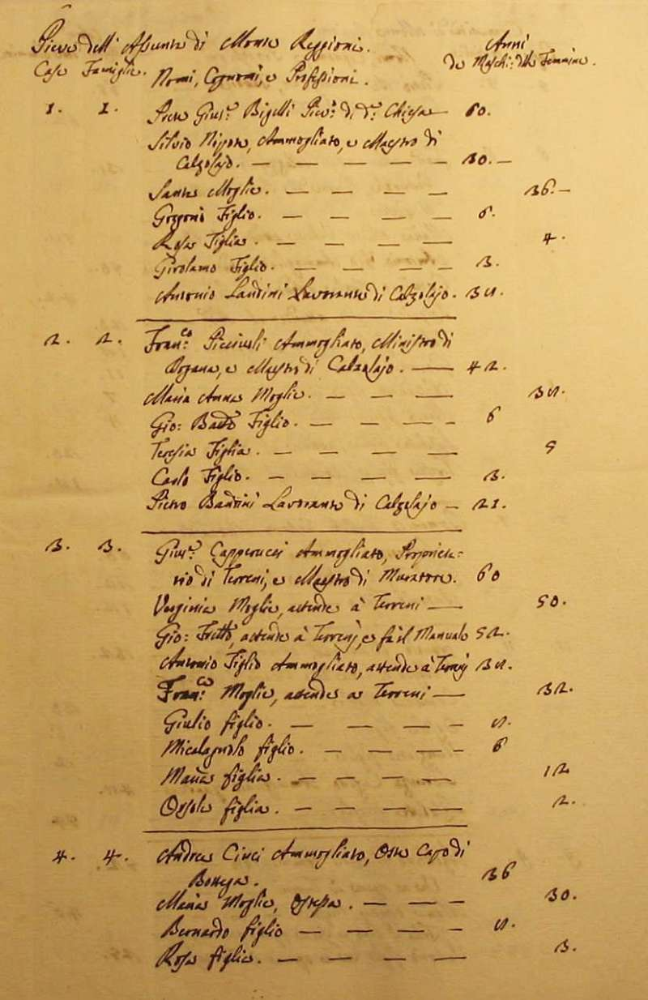
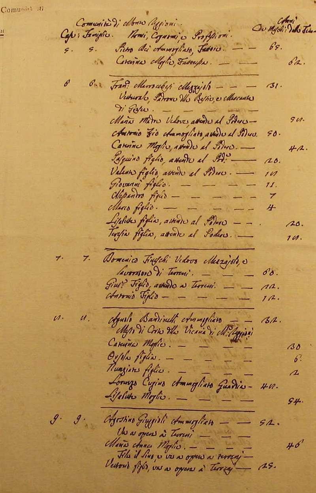
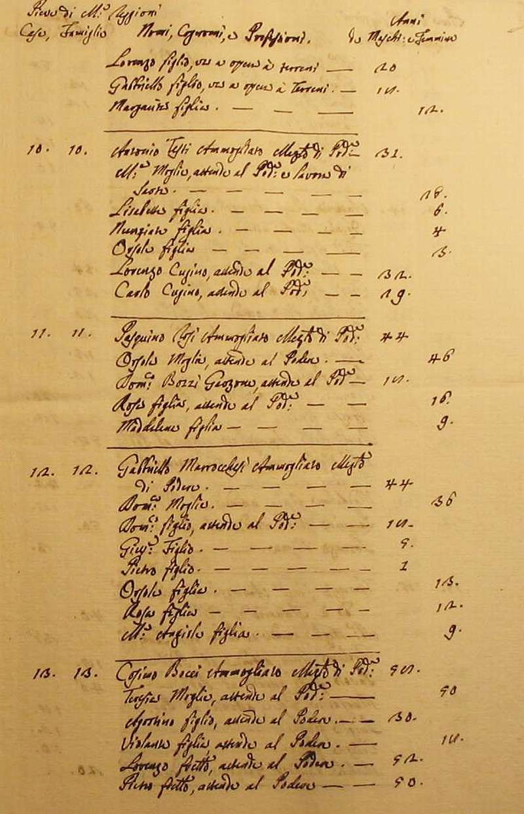
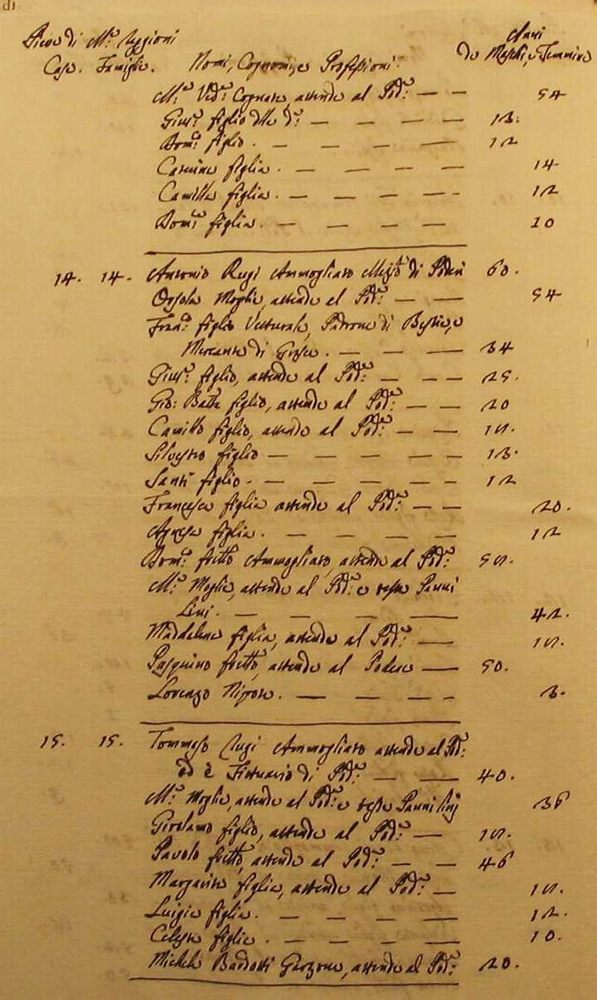
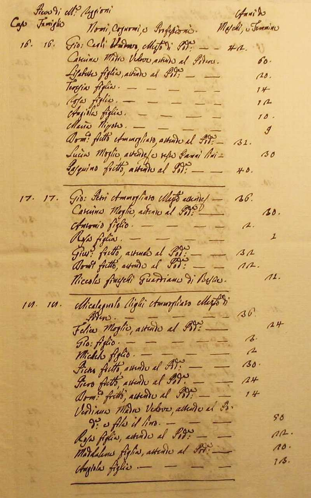
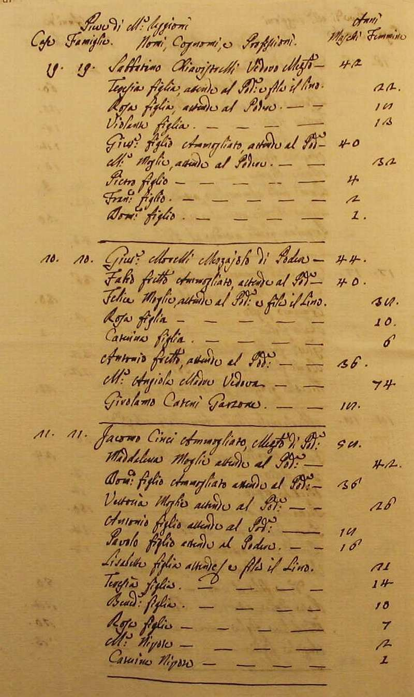
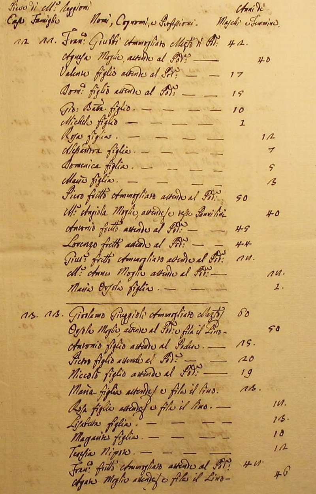
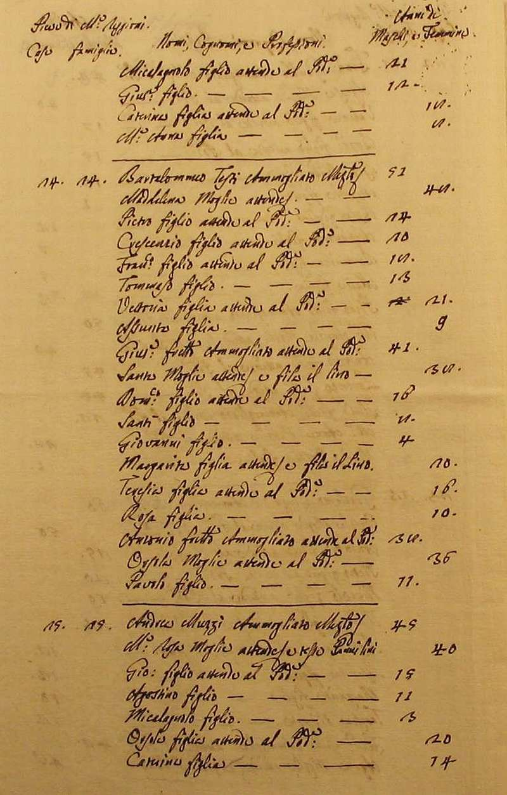
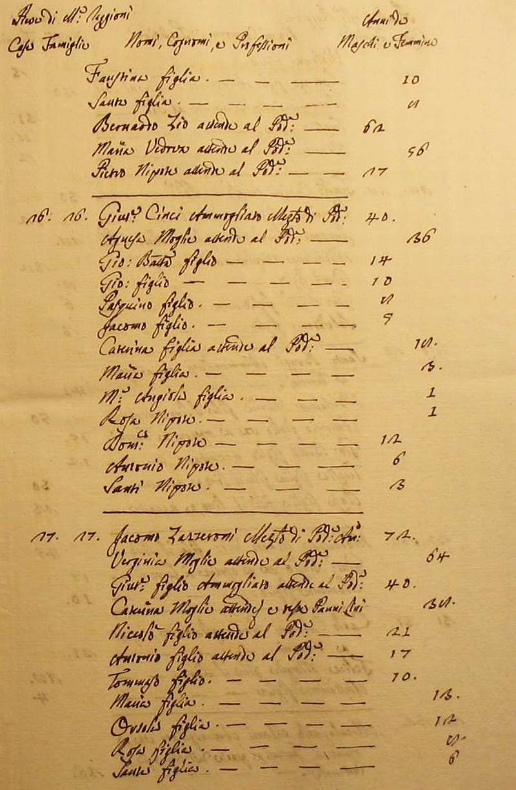
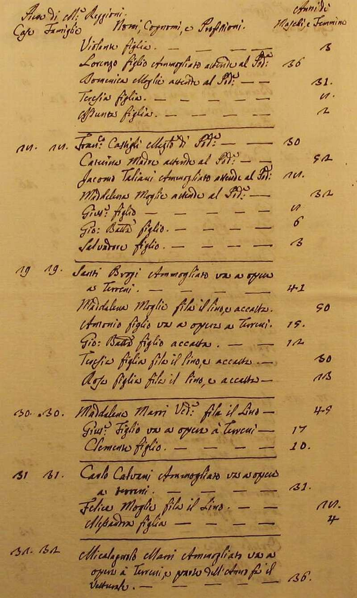
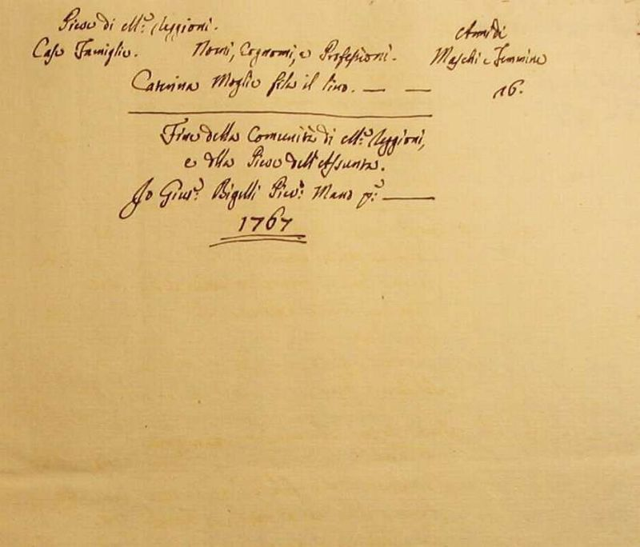
Torna ad inizio pagina
Ritorna all'indice delle parrocchie
| |

|